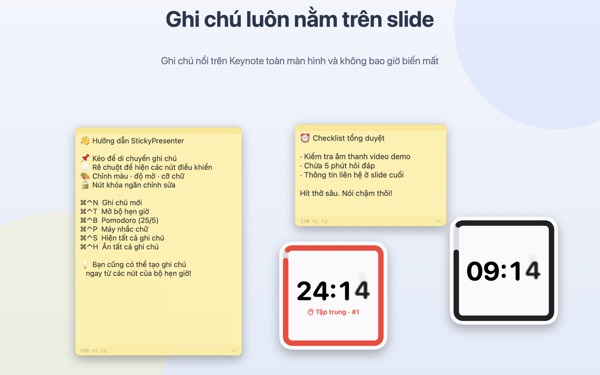
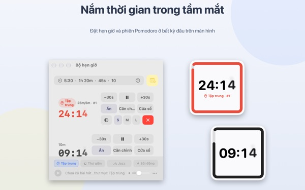
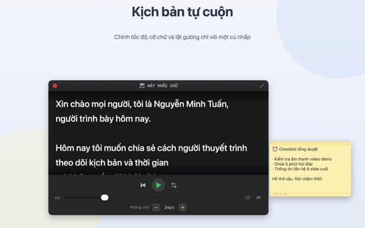
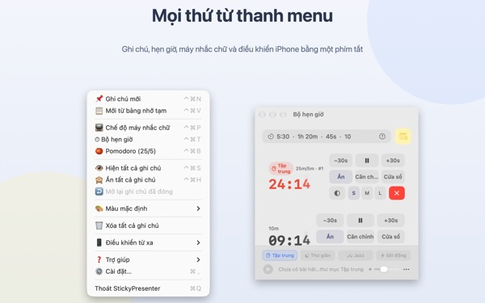

Kịch bản và thời gian còn lại
ngay trên slide
Bật Keynote toàn màn hình, ghi chú và đồng hồ hẹn giờ vẫn nằm ngay phía trên. Chúng không giành tiêu điểm của ứng dụng trình chiếu, nên bút trình chiếu vẫn chuyển slide như thường.
Mọi tính năng đều miễn phí. Cần macOS 14 trở lên.

Thử đặt lên một slide
Gõ thời gian giống như trong ứng dụng. Chạm 15s để xem widget nhắc bạn thế nào khi sắp hết giờ.
Khi thuyết trình, bạn để kịch bản và đồng hồ ở đâu?
Chế độ người thuyết trình cần thêm một màn hình, còn liếc đồng hồ đeo tay thì khán giả luôn nhận ra. Có thể bạn từng dán mẩu giấy lên laptop rồi thấy nó rơi mất. StickyPresenter ghim kịch bản và thời gian còn lại ngay trên slide, đúng chỗ mắt bạn đang nhìn.
Liếc một cái là biết còn bao lâu
Widget hình vuông ở góc màn hình hiển thị thời gian còn lại. Gần hết giờ nó chuyển sang màu đỏ, hết giờ thì phát âm báo và nháy viền.
Gõ thời gian thoải mái như 5:30 hay 1h 20m, hoặc gõ 25/5 để có Pomodoro xen kẽ tập trung và nghỉ. Mở đồng hồ hẹn giờ thành cửa sổ riêng để chỉ chia sẻ cửa sổ đó khi chia sẻ màn hình hay dùng AirPlay.

Đọc kịch bản mà vẫn nhìn vào máy quay
Máy nhắc chữ cuộn kịch bản theo tốc độ bạn đặt và tự dừng khi đến cuối. Sao chép kịch bản rồi nhấn ⌘⌃P, nó sẽ mở ngay với đoạn văn đó.
Có chế độ lật ngang cho thiết bị nhắc chữ dùng kính phản chiếu, còn tốc độ và cỡ chữ được giữ nguyên cho lần sau.

Không phải rời khỏi slide
Ứng dụng chạy lặng lẽ trên thanh menu, không có biểu tượng trong Dock, không có cửa sổ nào phải trông. Các phím tắt như ⌘⌃N để tạo ghi chú mới, ⌘⌃T để mở hẹn giờ vẫn hoạt động ngay cả khi Keynote đang toàn màn hình.
Trên sân khấu, ứng dụng iPhone miễn phí Remote Controller for Sticky giúp bạn bắt đầu, tạm dừng hẹn giờ và dời widget khi nó che mất slide.

Bắt đầu với ba bước
- 1
Mở ứng dụng
Biểu tượng ghi chú xuất hiện trên thanh menu, lần đầu sẽ có hướng dẫn ngắn mở ra.
- 2
Đặt ghi chú và hẹn giờ
Sao chép kịch bản rồi nhấn
⌘⌃V, sau đó gõ thời lượng bài nói vào ô hẹn giờ. - 3
Chuyển slide sang toàn màn hình
Ghi chú và hẹn giờ vẫn nằm phía trên.
Phím tắt và cách gõ thời gian
- ⌘⌃N
- Ghi chú mới
- ⌘⌃V
- Tạo ghi chú mới từ nội dung đã sao chép
- ⌘⌃T
- Hiện hoặc ẩn hẹn giờ
- ⌘⌃B
- Bắt đầu Pomodoro (tập trung 25 phút, nghỉ 5 phút)
- ⌘⌃P
- Máy nhắc chữ
- ⌘⌃S · ⌘⌃H
- Hiện hoặc ẩn mọi ghi chú
- 10
- Chỉ gõ số nghĩa là phút (10 phút)
- 5:30 · 1:15:00
- Phút:giây, giờ:phút:giây
- 1h 20m · 45s
- Kèm đơn vị
- 25/5
- Tập trung/nghỉ, lặp lại đến khi bạn dừng
Mọi phím tắt đều nhấn Command (⌘) cùng Control (⌃) và dùng được cả khi bạn đang ở ứng dụng khác. Hẹn giờ tối đa 99:59:59.
Câu hỏi thường gặp
Có thật sự miễn phí không?
Có. Mọi tính năng đều miễn phí, và ứng dụng iPhone Remote Controller for Sticky cũng là một ứng dụng miễn phí riêng. Nếu thấy hữu ích, bạn có thể gửi tiền tip cho nhà phát triển trong Cài đặt; tiền tip không mở thêm tính năng nào.
Khi chia sẻ hoặc phản chiếu màn hình, có thể chỉ hiện đồng hồ hẹn giờ không?
Được. Nhấn nút Cửa sổ ở dòng của hẹn giờ để mở nó thành cửa sổ thường. Khi đó nó có trong danh sách cửa sổ của tính năng chia sẻ màn hình và AirPlay, bạn chỉ cần chọn chia sẻ cửa sổ này.
Tôi đã ẩn widget hẹn giờ và giờ không tìm thấy.
Trong cửa sổ hẹn giờ, rê chuột lên dòng của hẹn giờ đó, vị trí widget sẽ được đánh dấu bằng đường nét đứt. Nhấn Căn chỉnh để gọi nó về cạnh cửa sổ hẹn giờ.
Tôi lỡ đóng một ghi chú.
Dùng Mở lại ghi chú đã đóng trên thanh menu để khôi phục bất kỳ ghi chú nào trong 20 ghi chú gần nhất. Ghi chú được lưu ngay khi gõ và trở lại đúng chỗ cũ khi mở lại ứng dụng.
Phím tắt không hoạt động.
Nếu bảng phím tắt trong hướng dẫn ghi Đang được ứng dụng khác dùng, nghĩa là một ứng dụng khác đã giữ phím đó trước. Thoát ứng dụng đó là dùng lại được. Không cần quyền Trợ năng.
Vì sao chủ đề Tắc kè hoa xin quyền Ghi màn hình?
Tắc kè hoa đọc màu của phần màn hình phía sau widget để đổi màu theo, nên cần quyền này. Không có gì được lưu hay gửi đi. Nếu không cấp quyền, các chủ đề Hệ thống, Sáng và Tối vẫn dùng bình thường.
Thêm nhạc nền bằng cách nào?
Chọn một không khí (Tập trung, Thư giãn, Jazz hoặc Sôi động) ở thanh nhạc cuối cửa sổ hẹn giờ, ứng dụng sẽ tạo sẵn thư mục cho từng loại. Bỏ bài hát của bạn vào đó, nhạc sẽ phát lần lượt cùng đồng hồ hẹn giờ. Ứng dụng không kèm sẵn nhạc.
Điều khiển trên iPhone không tìm thấy Mac.
Hãy kiểm tra lần lượt: StickyPresenter có đang chạy trên Mac không (xem biểu tượng trên thanh menu); hai thiết bị có cùng một mạng Wi‑Fi không (mạng khách hay dữ liệu di động đều không được); đã cho phép Mạng cục bộ trong Quyền riêng tư & Bảo mật trên cả iPhone và Mac chưa; VPN đã tắt chưa.
Điều khiển báo mã ghép nối không đúng.
Nhập mã bốn số đang hiện trong mục Điều khiển từ xa trên thanh menu của Mac. Nếu bạn đã nhấn Mã ghép nối mới thì chỉ mã mới dùng được. Sau lần ghép nối đầu, lần sau chỉ cần mở ứng dụng là tự kết nối.
Người khác có điều khiển được hẹn giờ của tôi không?
Không, nếu họ không biết mã. Mac chỉ nhận những điều khiển đã nhập đúng mã, qua kết nối trực tiếp được mã hóa trong mạng cục bộ. Nếu đã lỡ để người khác thấy mã, hãy chọn Mã ghép nối mới hoặc Quên các điều khiển từ xa đã ghép nối trong mục Điều khiển từ xa.
Ghi chú và kịch bản được lưu ở đâu?
Chỉ trên chiếc Mac này. Không cần tài khoản, không quảng cáo, và không có gì gửi lên mạng ngoài thống kê sử dụng ẩn danh và góp ý bạn tự gửi.
Có câu hỏi, gặp lỗi hay muốn góp ý? Gửi thư đến mizzking75@gmail.com.